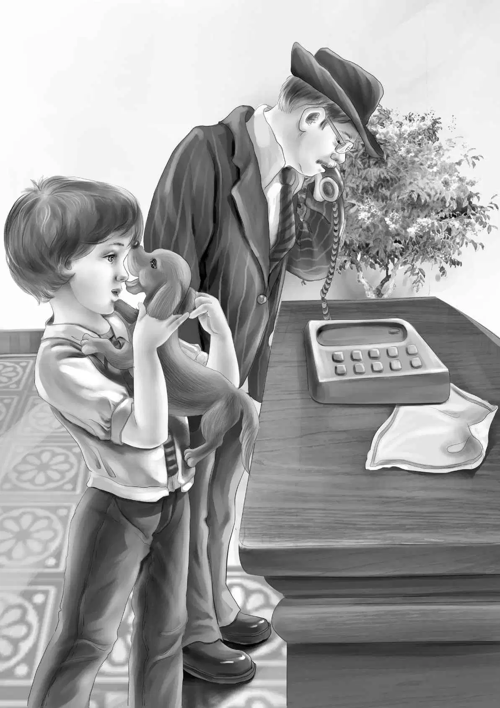

Chapter 1 A Farm for Sale
晚饭后，客厅里突然电话铃声大作，班尼正好路过，便接起了电话。
“爷爷——”班尼大声喊道，“是您的长途电话。”
奥登先生接过了电话：“你好，是我！”
之后，他就只是听着，没有再说话了。班尼和姐姐维莉忍不住想听听爷爷到底在讲什么事情。
终于，爷爷又开口了：“太好啦，简！”
“是简姑婆来的电话！”维莉小声对班尼说。
班尼点点头，脸上露出一个大大的笑容。
“这主意真的很棒，简！”爷爷又说了一次，“当然，我很喜欢！好，先这样吧，简……我考虑一下，尽快给你回话……不会的，简，不会太久，大概一两天吧……嗯，我知道你喜欢速战速决，跟小班尼一样。”爷爷说着，回过头来，冲班尼眨了眨眼睛。
最后，爷爷说道：“再见喽，简，咱们很快就能见面啦！”
“很快就能见面？”班尼问，“这么说，我们又要去西部看简姑婆了？”
“不，是她要来看我们。”奥登先生答道。
“哇哦，哇哦，哇哦！”班尼连着欢呼了三声。

“哈，我刚才也准备这么叫呢！”爷爷模仿着班尼的语气叫道，“哇哦，哇哦，哇哦，哇哦！好了，现在，去把你们的哥哥姐姐叫来吧，咱们好好安排一下。班尼，你去找亨利。”
“那我去找杰西，”维莉说，“她在楼上自己的房间里。”
奥登家的四个孩子——两个女孩和两个男孩——和他们的爷爷一起住在大宅子里。亨利在上大学，杰西上高中三年级，维莉马上要升高中了，班尼还在上小学。几分钟以后，四个孩子就在爷爷的卧室里聚齐了。
爷爷微笑着环顾了一下四周。“接下来我要宣布重大新闻喽！”他笑着说，“简姑婆要搬来东部，到新英格兰住了。她想让我帮她买一个农场，而且要尽快，一刻不能耽误。”
“像狐狸奔跑那么快的速度吗？”班尼插嘴道。
“没错！”爷爷大笑起来。
“她为什么要搬家呢？”杰西问，“住在神秘农场多好啊！”
“是这样的，我和简姑婆都出生在新英格兰的农场里，”奥登先生回忆道，“后来，我们全家迁移到了西部，我还记得，当时简大概18岁，我比她小几岁。没过多久，我就因为生意搬到了这里，而简姑婆不愿跟过来，她想留下来，一个人打理神秘农场。”
“简姑婆脾气好倔。”班尼插了一句。
“我还记得您说过，”杰西说，“就因为这件事，您和简姑婆闹了很大的别扭。”
“没错，她是个骄傲的人，从不愿示弱，以至于后来她发现自己没法子照顾农场时，也不肯接受帮助，结果差点没被饿死。”
“幸亏她当时生病的时候，我们过去了。”维莉说，“我们救了一个可爱的姑婆。”
“是啊，她……她现在可爱多啦！”爷爷说着忍不住笑了起来，“现在，我想给简一个大惊喜。也许我可以把我们小时候住的那个农场买下来，她肯定会非常喜欢的。”
“噢，太棒啦！”杰西喊道，“那咱们可以先到农场去，收拾好一切，准备迎接简姑婆的到来。您说我们需要去买点椅子、桌子和床之类的家具吗？就让我们帮帮您吧，咱们可以把食物和床全都打点好呢！”
“这太有趣啦！”维莉的眼睛睁得大大的，露出期待的神情。
“爷爷，您准备什么时候去买农场？”班尼问道。
“小家伙，我也要给你一个惊喜——我现在就去买！现在才刚过晚饭时间，应该不算太晚。”
班尼兴奋地抱住小狗望望，又蹦又跳。望望尽管不乐意这么蹦跶，但也由着他去，没有抱怨地哼哼。毕竟，它是那么喜欢班尼。
“亨利，把电话递给我吧！”奥登先生说。
“您要给谁打电话？”班尼连忙问，“您知道新英格兰农场的电话吗？”
“不知道。”尽管奥登先生这么说，他还是拨了一通电话，原来他是打给村子里的杂货店。
“现在已经很晚了，店里应该没人了吧？”亨利说。
“这可没准，”奥登先生说，“以前店主是住在店里的，说不定现在也是！”
果不其然，听筒里传来很大声的回应，孩子们能听清楚每一个字。
“你好，”爷爷问道，“请问是店主吗？”
“可以这么说吧，”对方答道，“小店是我的。”
“那你知道山上的那个旧奥登农场吗？”
“山上的奥登农场？当然知道喽！我就住在山下的镇子里。”
“这个我知道。我想问问，农场是不是要卖掉？”
“没错，是要卖掉。农场很萧条，因此便宜大甩卖了——连着家具一起。”
“那卖主是谁呢？”爷爷问。
“算是我吧！这个农场没给我带来什么好运……有谁想买吗？”
“我想买。我和我的姐姐简小时候曾在那儿住过。我是詹姆斯·奥登。”
“真的？”电话里的人大声喊道，“我还记得简·奥登——也就是你姐姐，不过那是很久前的事啦！你是想把农场再买回去吗？”
“没错，我是这么打算的。”
“那么，我给你个好价钱吧，连着所有的地、房子、谷仓、鸡窝、小木屋一起——还有那些家具。”
“这些我全都买了！”爷爷爽快地说。
“什么？”对方有点不敢相信自己的耳朵。
“我们见面商量一下价格吧！”爷爷又重复了一遍，“对了，请告诉我你的全名。”
“我叫以利沙·摩尔斯——我也记不太清楚自己的全名。你是要来这儿住吗？”
“不是我，是我姐姐简要住。”
“哦，哦，哦！这个长途电话让您破费不少，就说到这儿，先挂了吧！”
“好吧，”爷爷说，“我们很快就会开车去看看新农场。”
“不是新农场，是很旧的农场。”电话那头的人说。
“对我来说是新的——新买的。”爷爷说，“谢谢你，再见喽！”
挂上电话，爷爷靠在沙发上，笑了起来，“班尼，我的办事速度是不是跟狐狸一样快？你是不是就希望这么快？”
“爷爷，您简直太酷了！”班尼开心地说。
“应该说是运气不错。”奥登先生纠正道。
大家都赞同这一点。爷爷暂时放心了，杰西却立马开始制订计划了。